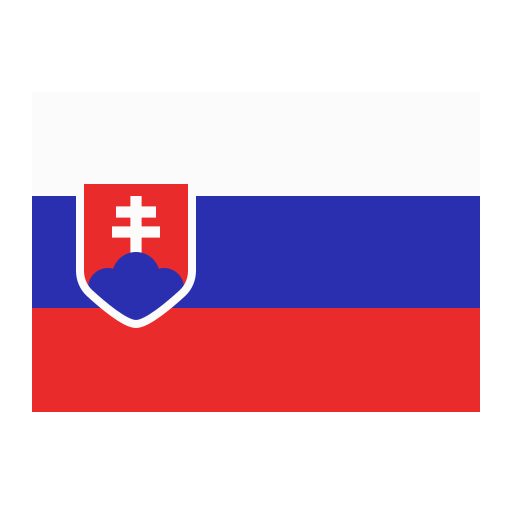

La selección de Rumanía ha participado en varias ediciones de la
Eurocopa, con su mejor actuación en 2000, cuando llegaron a los
cuartos de final. También estuvieron presentes en las ediciones de
1984, 1996, 2008, y 2016. Aunque no han alcanzado las etapas finales
con frecuencia, Rumanía sigue siendo un equipo competitivo, con la
esperanza de mejorar sus resultados en futuras competiciones
europeas.
Bélgica
La selección de Bélgica ha tenido un impacto significativo en la
Eurocopa, siendo subcampeona en 1980 tras perder la final contra
Alemania Occidental. También alcanzaron los cuartos de final en 2016
y han sido semifinalistas en 1972. Con una generación de jugadores
talentosos, Bélgica ha demostrado ser una potencia en el fútbol
europeo y continúa aspirando a su primer título en la Eurocopa.
Ucrania
La selección de Ucrania ha participado en la Eurocopa en 2012 (como
co-anfitrión) y 2016, con su mejor desempeño en 2020, cuando
alcanzaron los cuartos de final. Aunque su historial en el torneo es
relativamente corto, Ucrania ha mostrado progreso y potencial. Con
un enfoque en el desarrollo de jugadores jóvenes, Ucrania busca
consolidar su posición y lograr mayores éxitos en el escenario
europeo.

Eslovaquia
La selección de Eslovaquia ha participado en la Eurocopa en 2016 y
2020, con su mejor resultado en 2016, cuando avanzaron a los octavos
de final. Aunque su presencia en el torneo es reciente, Eslovaquia
ha demostrado ser un equipo competitivo y en crecimiento. Con
aspiraciones de mejorar su desempeño, Eslovaquia sigue trabajando
para lograr un impacto más significativo en futuras ediciones de la
Eurocopa.